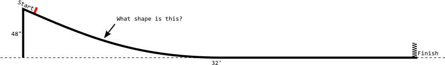
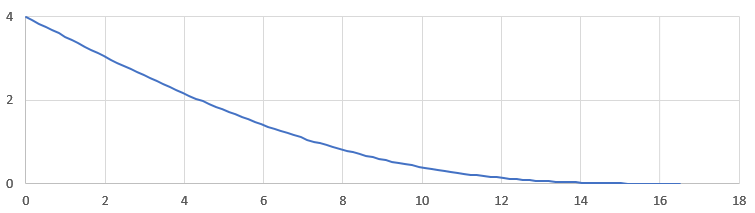

We need to know the exact shape of the pinewood derby track in order to get an accurate simulation. My track is not some fancy aluminum concoction built to exacting specifications with published dimensional drawings complete with tolerance callouts. No, instead my track is essentially a very long, thin, flexible board. I know that the start of the track is 4' high and the whole thing is 32' long, and that it levels out around the halfway mark. But the shape of the curve between the start and the halfway point has a huge impact on the time the car crosses the finish line. (But not so much the speed at which it crosses the line. Do you know why?)

The track is supported by a hinged leg at the starting line, and by the floor after it levels off. (It's also supported by a small leg in the middle of the curved section, but that leg doesn't actually carry much load and is only there to prevent the track from wobbling.) We'll assume that the weight of the track is uniform across its length, and that the stiffness of the track is the same everywhere. This is very much like a beam deflection calculation in engineering. Strictly, beam deflection calculations are only good for small deflections, but the math is already "interesting" enough that we don't need to complicate things any more by using the large deflection equations.
The Euler-Bernoulli beam equation is:
$$ E I \frac{\mathrm{d}^4 w}{\mathrm{d} x^4} = q$$
Yes, that is a derivative. And it is a fourth derivative to boot. But don't worry, I will do the calculus for you and show how to work through the algebra that is left over. In the beam equation, $w$ is the deflection of the beam at each coordinate $x$, or in other words, how high above the ground the track is at every position $x$. The variable $q$ is how heavy the track is, in units of force per length. It can vary with $x$ but for this problem it is constant. $E I$ is the product of the modulus of elasticity of the track material and the second moment of area of the track's cross-section--or in other words, how stiff the track is.
The solution to the beam equation is (calculus magic): $$w(x) = \frac{q}{24EI} x^4 + A x^3 + B x^2 + C x + D$$ The variables $A, B, C,$ and $D$ depend on the particular way the beam is supported on each end. The trick is applying the right boundary conditions--what the beam is doing at each end--which will allow us to solve for the coefficients $A, B, C,$ and $D$.
Before we go any further, we'll cut our "beam" in half at the point where it first touches the ground, and call the length of the curvy part of the track $L$. From my rough measuring of the real track using my eye-chrometers, I think $L$ is about 16 feet, but in reality the true value of $L$ is unknown. While we're at it, let's also make a variable $h$ to represent the height of the start of the track--in case we want to find out how the shape changes when we change $h$.
The $w(x)$ equation applies to the curved section of the track shown here. We know the general shape of the curve (a fourth order polynomial) but we don't know the coefficients yet.
The first boundary condition we will apply is $w(0) = h$. What this means is that when $x=0$, or at the starting line, the track is $h$ or 4 feet off the ground.
Now for the second boundary condition. The curved portion of the track ends at 0 feet above the ground when we reach $x = L$, which means the second boundary condition is $w(L) = 0$. (Don't forget that there's a long straight section that continues after $L$, but that won't enter into any of our calculations so we're ignoring it for now.)
The third boundary condition we will apply is $w'(L) = 0$. Here's a fun calculus fact: if $w(x)$ is the height of the track at position $x$, then $w'(x)$, read "the derivative of $w$ with respect to $x$", is the slope or grade of the track at position $x$. So what we are saying is that when $x = L$, or at the end of the curved portion, the slope of the track is 0. This literally means "when the track levels off, it has leveled off."
For the fourth boundary condition, first let me say that $w''(x)$, read "the second derivative of $w$ with respect to $x$, is a measure of how "bendy" the track is at position $x$. You can see in the picture that the track is more bendy in some places than others. In some places it appears quite flat indeed, almost no bend whatsoever. Now imagine you are holding a thin board by the end with only one hand. In order to bend it, you would have to apply some kind of torque to it (you're not allowed to push on it with your other hand). If you apply no torque, the board will not bend. The support leg at the starting line is freely hinged and so it cannot apply any torque. Hence, the bendiness of the track at $x=0$, the starting line, is 0 -- therefore our fourth boundary condition is $w''(0) = 0$.
Usually, for beam deflection problems, four boundary conditions are sufficient to obtain a complete solution of the deflection of the beam at every position. Most beam deflection problems also specify the length of the beam, $L$. However, recall that ours has an unknown length--we don't know the exact point at which the track levels off. This additional unknown variable necessitates a fifth boundary condition.
The fifth boundary condition is similar to the fourth. It is: $w''(L) = 0$, or in English, "the bendiness of the track when it levels off is zero." How do we know it is not "bendy" when it levels off? It certainly looks bendy. It turns out that the bendiness of the track reaches zero just as it levels off, and we know this because after the track levels off, it is perfectly straight and level. If there was any bendiness in the track after it leveled off, that bendiness would cause some portion of the remainder of the track to warp upward (it couldn't warp downward because the floor would be in the way). So there it is. In summary, here's another diagram of the track with the five boundary conditions labeled:
The five boundary conditions of our track problem, and the five unknown variables A, B, C, D, and L.
We have five variables, $A, B, C, D,$ and $L$, and five equations--our boundary conditions. Things are looking good. Let's take a crack at solving for these five variables. We'll consider each boundary condition in turn, although not necessarily in order.
Let's apply the first boundary condition, $w(0) = h$, to the formula for $w(x)$. We'll substitute $0$ everywhere we see $x$:
$$w(0) = h = \frac{q}{24EI} (0^4) + A (0^3) + B (0^2) + C (0) + D$$
$$h = D$$
We've already got our first unknown, $D = h$. For the next unknown, we'll skip ahead and use the fourth boundary condition, $w''(0) = 0$. First let me work some calculus magic to find the formula for $w''(x)$:
$$w''(x) = 12 \frac{q}{24EI} x^2 + 6 A x + 2 B$$
Now applying the fourth boundary condition:
$$w''(0) = 0 = 12 \frac{q}{24EI} (0^2) + 6 A (0) + 2 B$$
$$0 = 2 B$$
$$0 = B$$
Now we know that $B = 0$. We're on a roll!
Now for the second boundary condition, $w(L) = 0$. We'll substitute the variables we've figured out so far: $B=0$ and $D=h$.
$$w(L) = 0 = \frac{q}{24EI} L^4 + A L^3 + C L + h$$
Unfortunately we are stuck here; there's nothing more that we can do to separate the $A$ from the $C$.
Let's try the third boundary condition, $w'(L) = 0$.
♪ calculus magic ♪
$$w'(x) = 4 \frac{q}{24EI} x^3 + 3 A x^2 + 2 B x + C$$
Now substituting $L$ for $x$ and $0$ for $B$:
$$w'(L) = 0 = 4 \frac{q}{24EI} L^3 + 3 A L^2 + C$$
Again we are stuck, we can't separate the $A$ and the $C$. So instead we will use a special algebra trick and combine this equation with the one we got above from the second boundary condition. Here are the two equations again one more time:
$$0 = \frac{q}{24EI} L^4 + A L^3 + C L + h$$ $$0 = 4 \frac{q}{24EI} L^3 + 3 A L^2 + C$$
For our special trick, we'll multiply both sides of the bottom equation by $L$, and then we'll subtract the two equations:
$$0 = \frac{q}{24EI} L^4 + A L^3 + C L + h$$ $$0 = 4 \frac{q}{24EI} L^4 + 3 A L^3 + C L$$After subtracting the bottom equation from the top equation:
$$0 = -3 \frac{q}{24EI} L^4 - 2 A L^3 + h$$Aha! We got rid of the $C$. Told you it was tricky. By rearranging this, we can figure out what $A$ is:
$$2 A L^3 = h - 3 \frac{q}{24EI} L^4$$ $$A = \frac{h}{2L^3} - \frac{q}{16EI} L$$Although we have $A$ in terms of the as yet unknown $L$, everything will still turn out all right in the end. Don't worry.
Now we'll substitute this value of $A$ into one of the other equations we got stuck at and see if we can get unstuck: $$0 = \frac{q}{24EI} L^4 + A L^3 + C L + h$$ $$0 = \frac{q}{24EI} L^4 + \left(\frac{h}{2L^3} - \frac{q}{16EI} L\right) L^3 + C L + h$$ $$0 = \frac{q}{24EI} L^4 + \frac{h}{2} - \frac{q}{16EI} L^4 + C L + h$$ $$0 = -\frac{q}{48EI} L^4 + \frac{3}{2} h + C L$$ $$C = \frac{q}{48EI} L^3 - \frac{3h}{2L}$$Now we have $C$ in terms of $L$. If this were an ordinary beam deflection problem, $L$ would be given in the problem statement. Don't worry that we don't know $L$ yet. It will be OK. Now we will apply our fifth and final boundary condition, $w''(L) = 0$, in an attempt to figure out $L$. Recall from our calculus magic above that the formula for $w''(x)$ is:
$$w''(x) = 12 \frac{q}{24EI} x^2 + 6 A x + 2 B$$And now substituting $L$ for $x$, $0$ for $B$, and our recently discovered value for $A$:
$$w''(0) = 0 = 12 \frac{q}{24EI} L^2 + 6 \left( \frac{h}{2L^3} - \frac{q}{16EI} L \right) L + 2 (0)$$ $$0 = \frac {q}{2EI}L^2 + \frac{3h}{L^2} - \frac{3q}{8EI}L^2$$ $$0 = \frac {q}{8EI} L^2 + \frac{3h}{L^2}$$ $$0 = \frac {q}{8EI}L^4 + 3h$$ $$L = \left(\frac{-24 h EI}{q}\right)^{1/4}$$And there it is! We've now determined all the unknown variables in our solution. Wait, in this last expression for $L$, it looks like we are taking the fourth root of a negative number. Isn't that illegal? Luckily, it's not actually a negative number we are taking the fourth root of. By convention we decided that deflection was zero at the floor and grew positive as the track rose upward. Since gravity acts downward, the force per unit length applied on the track, $q$, is a negative number. So the two negatives cancel. Phew! Dodged a bullet there.
Here's a summary of everything we've figured out. It's enough to fully characterize the shape of the track if you know its weight and stiffness.
$$w(x) = \frac{q}{24EI} x^4 + A x^3 + B x^2 + C x + D$$ $$A = \frac{h}{2L^3} - \frac{q}{16EI} L$$ $$B = 0$$ $$C = \frac{q}{48EI} L^3 - \frac{3h}{2L}$$ $$D = h$$ $$L = \left(\frac{-24 h EI}{q}\right)^{1/4}$$Before we plug in the actual weight and stiffness of the track, can this ugly polynomial be factored? Yes! Because $w$, $w'$, and $w''$ are all zero at $x=L$, we know there are three repeated roots at $x=L$, which greatly aids the factoring process. I ended up just graphing it to discover this, but if I was truly a saint I would use synthetic division or something to eventually arrive at:
$$w(x) = \frac{q}{24EI}(x+L)(x-L)^3$$For good measure, let's eliminate $q/24EI$ just to see what happens:
$$L=\left(\frac{-24 h EI}{q}\right)^{1/4}$$ $$L^4=\frac{-24 h EI}{q}$$ $$\frac{q}{24EI} = -\frac{h}{L^4}$$How about that? We got the shape of the track in terms of only the height and the level-off distance. And it's a pretty handsome looking formula, too. I couldn't have asked for any better result than that.
But just out of curiosity, what would our predicted level-off point be when we plug in the actual weight and stiffness of the track? The published value of modulus of elasticity for plywood is $E = 167 \times 10^{6}\ \mathrm{lbf/ft^2}$ and the specific gravity is $0.5$. The track is $w = 15.75\ \mathrm{in}$ wide and $t = 0.5\ \mathrm{in}$ thick, so the cross sectional area is $t w = 7.875\ \mathrm{in}^2$ and the second moment of area is $I = t^3 w/12 = 0.164 \ \mathrm{in}^4$. This gives a value of $q = (0.5\ \mathrm{g/cm^3}) (7.875\ \mathrm{in}^2) (-32\ \mathrm{ft/s^2}) = -1.7\ \mathrm{lbf/ft}$ and $EI = (167 \times 10^{6}\ \mathrm{lbf/ft^2})(0.164 \ \mathrm{in}^4) = 1322\ \mathrm{lbf\ ft^2}$.
Let's plot the predicted curvature of the track using these values of $EI$ and $q$:

Predicted curvature of the actual track
With these values of $EI$ and $q$, the track is predicted to level off at 16.5 feet, just about what we see in the real thing. When we built the track, we didn't glue the guide strips to the track surface. If we had done so, it would have more than doubled the stiffness, pushing the level-off point all the way out to 20 feet. Instead, the guide strips are free to move slightly, and only contribute marginally to the overall stiffness of the track.